The Silenced Flock
Posts about menstruation, vaginal health and sex education are removed, down-ranked or forced into code words on social platforms. I led a team of seven to document that suppression and make it visible, online and offline.
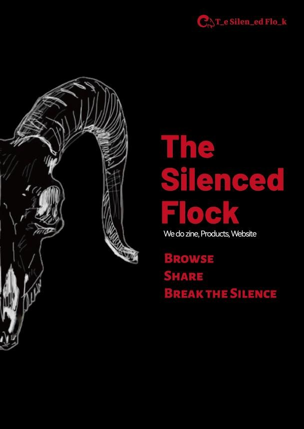
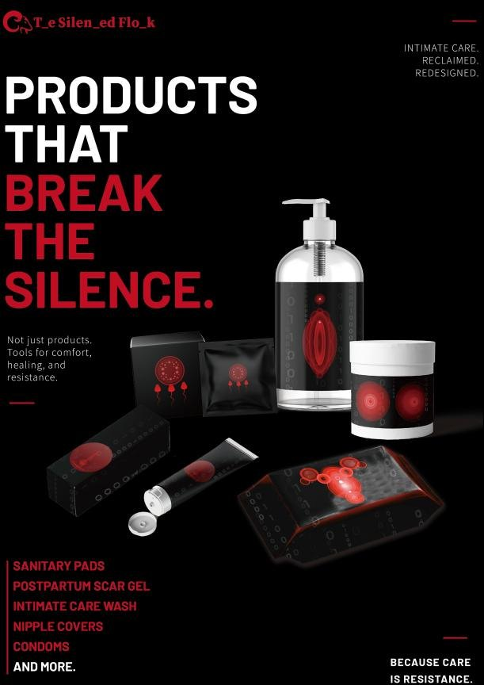
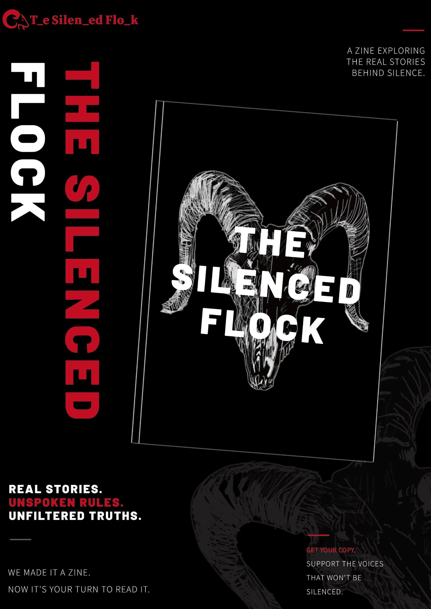
The brief, and getting it right
We chose the brief CensHERship x The Case for Her. Our first idea was an awareness campaign about PCOS. Tutor feedback showed us we had missed the point: the brief was about the censorship mechanism, not about any single health condition.
As leader, I took us back to the brief, ran a series of meetings to agree what problem we were actually solving, and reframed the project as a platform for displaying, collecting and evidencing the suppression of women’s health content. That reframing shaped every output that followed.
Research
We combined three kinds of evidence:
- An anonymous questionnaire on Google Forms and Wenjuanxing: 59 valid responses, most from people aged 18 to 25, the group that uses social media most and is used to finding women’s health information there.
- Platform observation on Xiaohongshu, documenting cases of posts getting very low views, a video being restricted repeatedly, and users replacing the names of conditions with abbreviations to get through review.
- News coverage of the same pattern on Instagram, Facebook and TikTok in the UK and US.
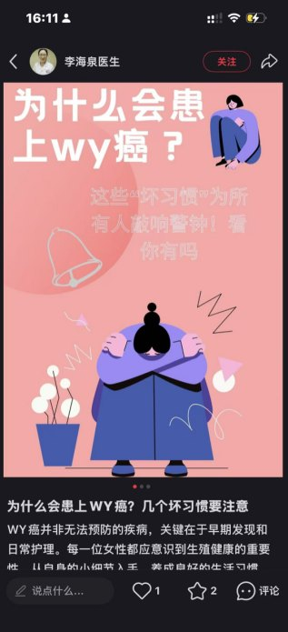
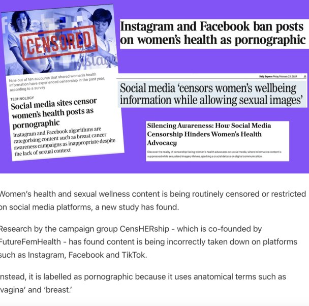
What we found
Base: 59 questionnaire respondents. 76.3% said they would or might take part in a campaign documenting this censorship, which is why the website centres on collecting evidence from users.
Identity
Black, red and white, to carry repression, control and resistance, deliberately unlike the soft visual style common in women’s health branding. The logo drops letters, “T_e Silen_ed Flo_k”, so the name itself is censored. The flock stands for users herded by algorithms.
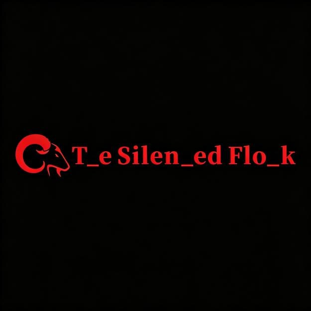
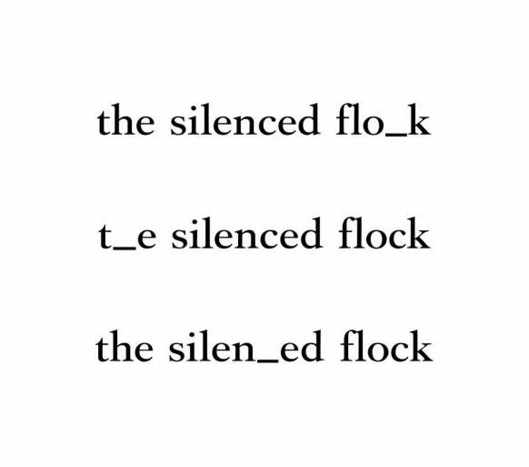
Website
The website is the project’s hub. A case archive presents the suppression cases from our research, and an anonymous evidence forum lets users share their own experiences and upload screenshots, so the evidence keeps growing after launch. The zine, posters and products are also presented online.
We tested the site with three target users. Feedback was about perception rather than function: buttons were hard to recognise, navigation unclear, pages too dense. We raised visual contrast, fixed navigation and moved to a scrolling layout.
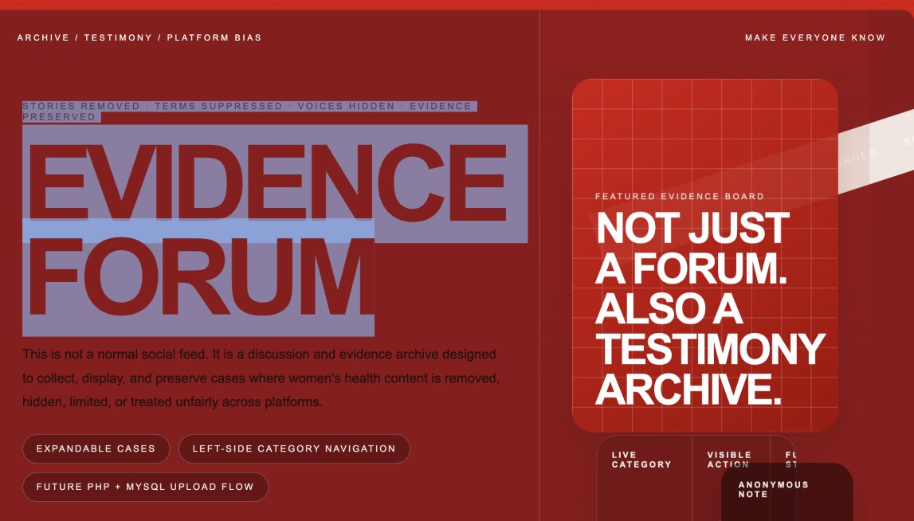
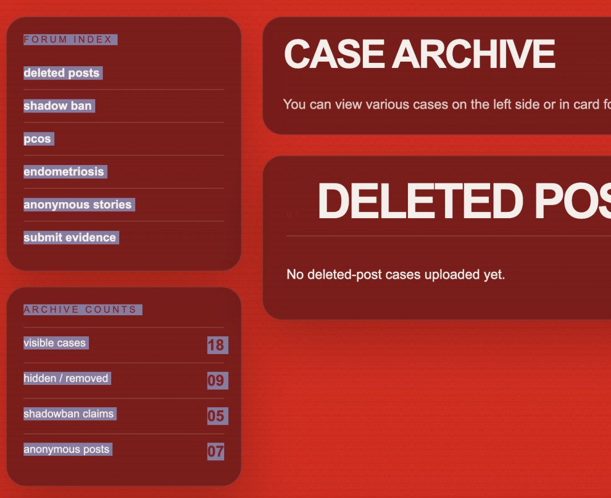
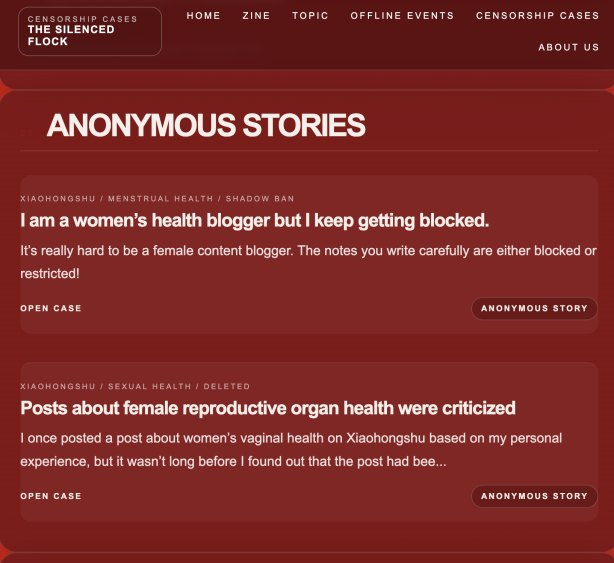
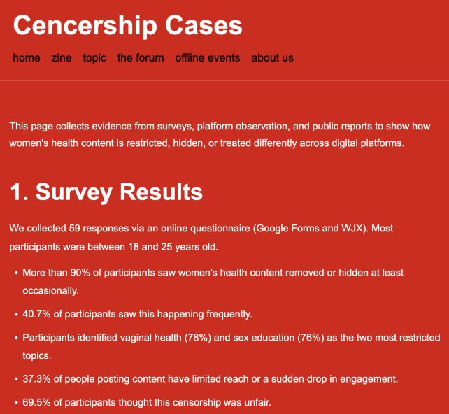
Zine
A printed zine turns invisible algorithmic control into something readers hold. Original hand-drawn illustrations follow the flock through three stages: controlled, breaking away, free. Red lines running through the pages stand for the invisible forces limiting what can be seen.
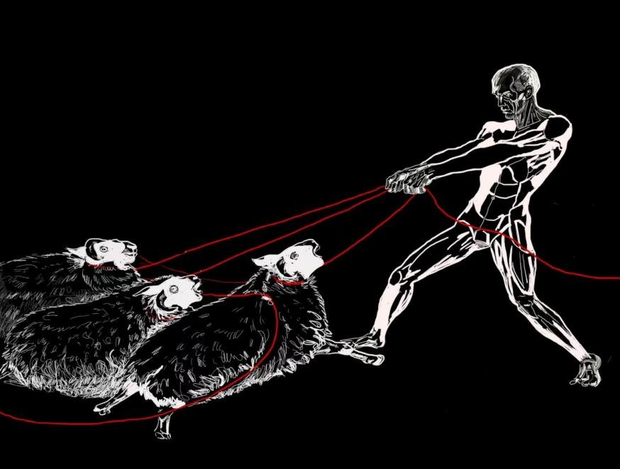
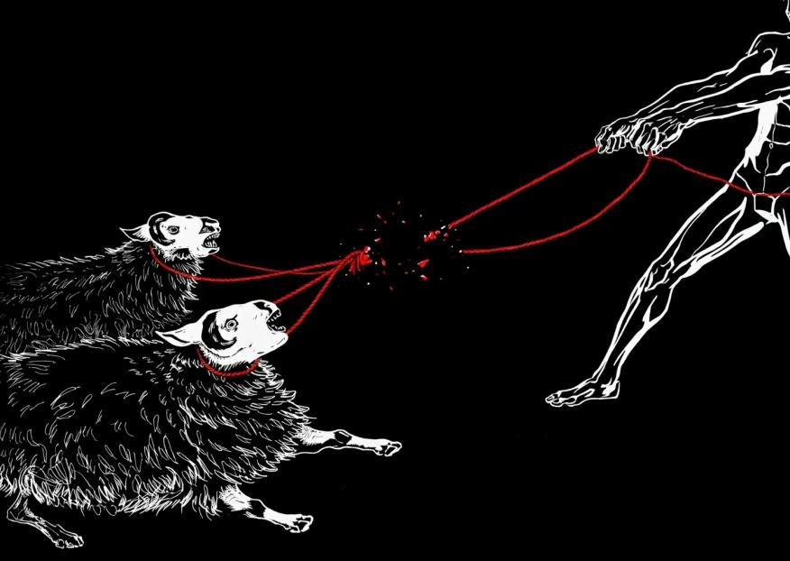
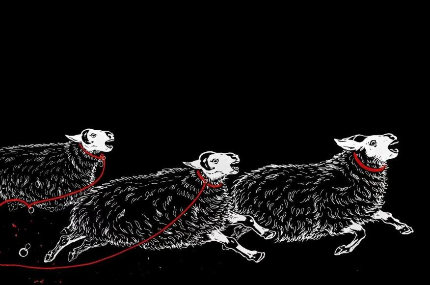
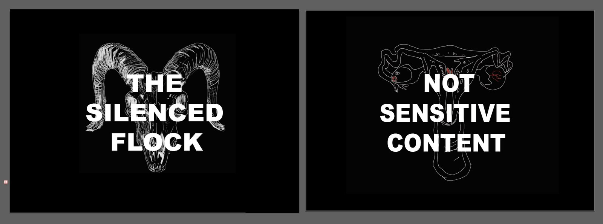
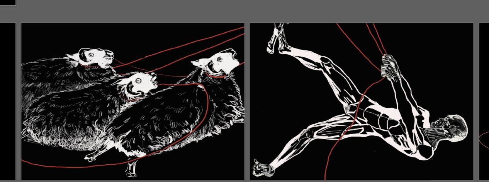
Product
Unblockable Her is an anti-censorship service box. Information that gets hidden online is printed in heat-sensitive ink: it only appears when warmed by a hand, so each touch acts out unblocking. Heat-sensitive organ patterns on the packaging reveal neglected gynaecological conditions in the same way.
A fold-out service manual pairs each product with the label platforms give it, such as “women’s health issues ≠ crude adult content”, and redacts words the way moderation does.
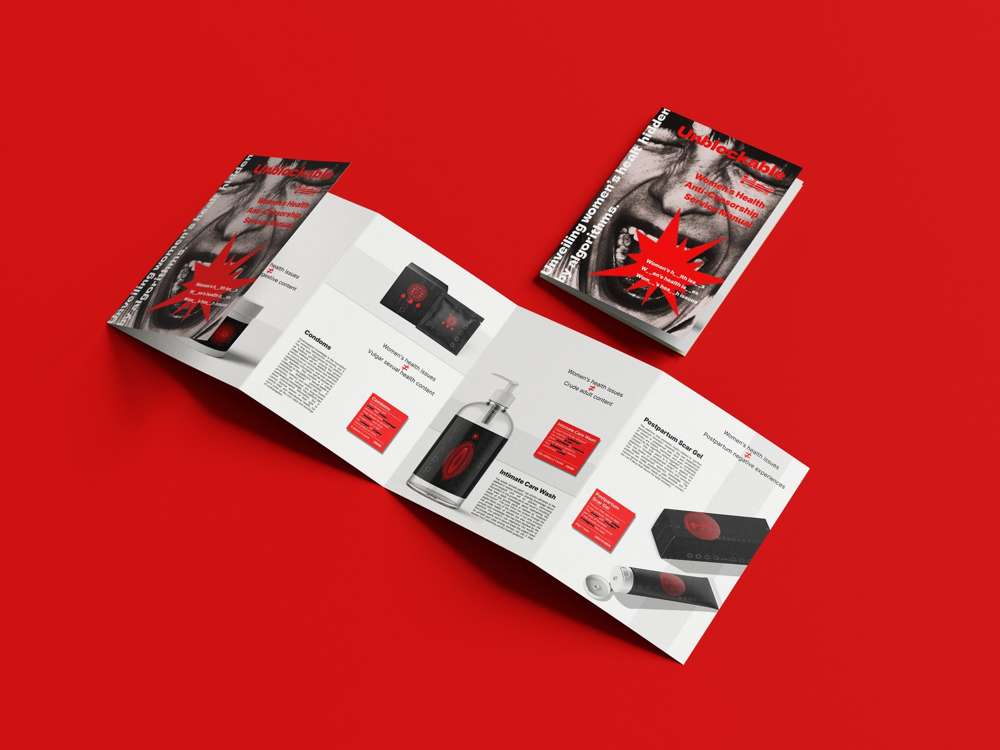
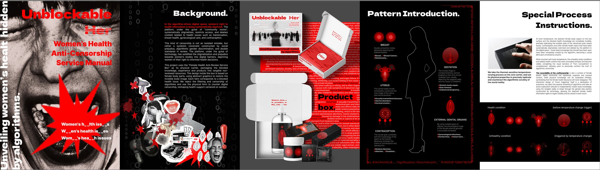
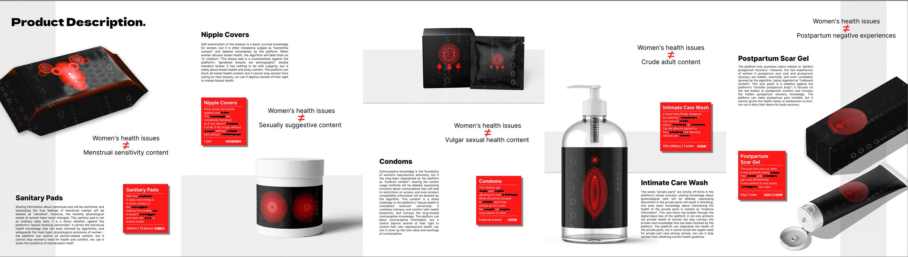
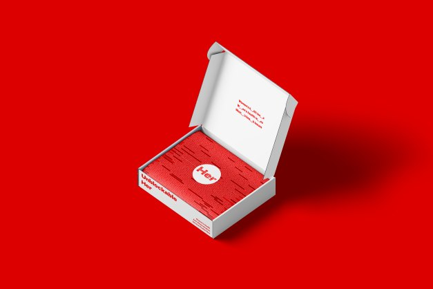
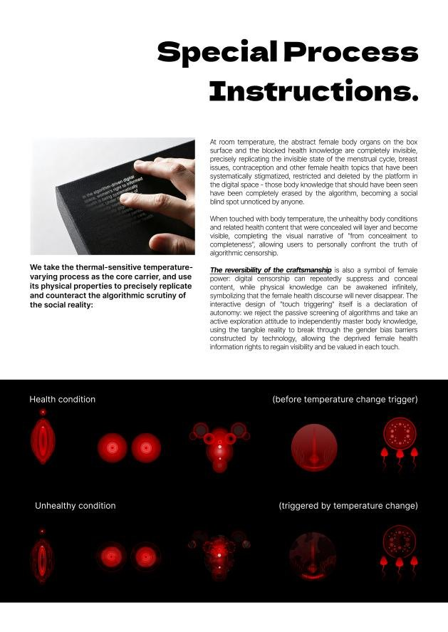
Who did what
| Role | Responsibilities |
|---|---|
| Team leader (me) | Concept and direction, reframing the brief, weekly meetings and timeline, task allocation, tutor liaison, pitch; built the website together with the developers |
| Researcher | User research, data analysis |
| Designers (3) | Product, posters and logo, zine |
| Developers (2) | Website and forum module |
Looking back
Our biggest mistake was mine to own. I pushed the team into ideas before we had understood the brief, so we lost time on the PCOS direction. I learned that direction comes before execution, and that a leader is less the person who knows best than the person who asks the best questions.
Once we had reframed, I changed how we worked: checking our understanding with the tutor through specific questions, running concept-clarification sessions where everyone could challenge assumptions, and putting verification points early instead of correcting afterwards. Seven people with different schedules also meant mediating conflict while keeping deadlines, which taught me to manage progress and relationships at the same time.